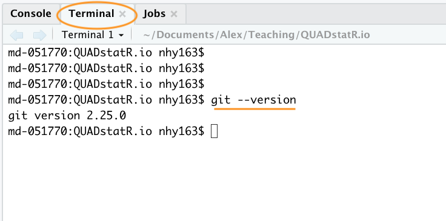
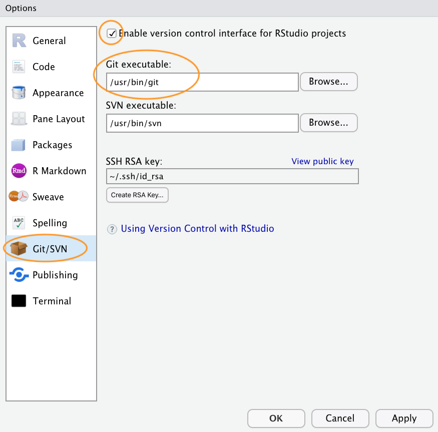
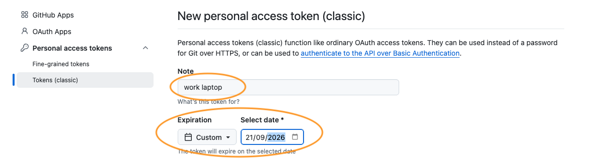
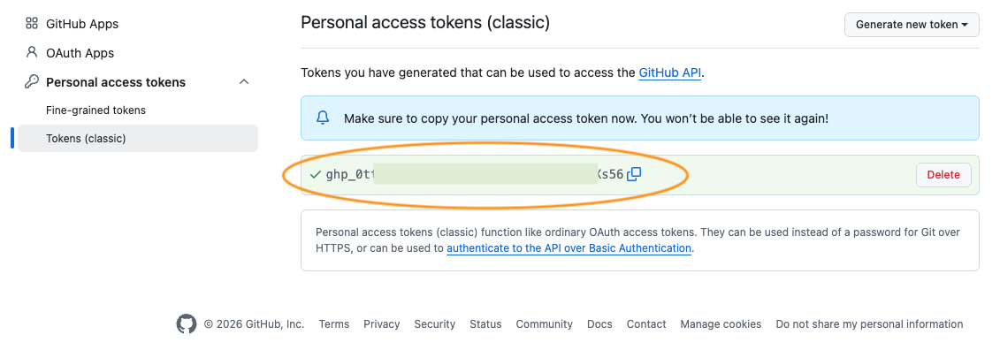
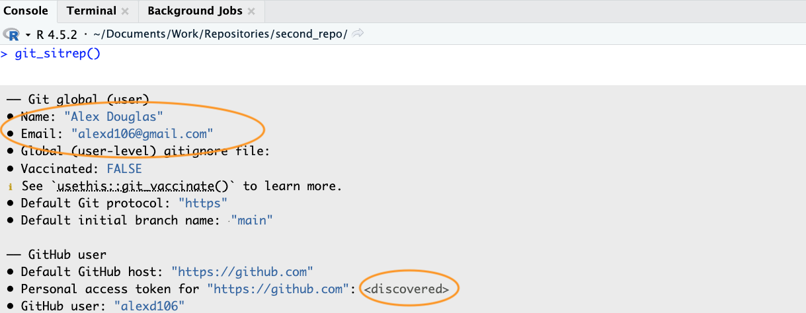

9.4 Getting started
This Chapter assumes that you have already installed the latest versions of R and RStudio. If you haven’t done this yet you can find instructions here.
9.4.1 Install Git
To get started, you first need to install Git. If you’re lucky you may already have Git installed (especially if you have a Mac or Linux computer). You can check if you already have Git installed by clicking on the Terminal tab in the Console window in RStudio and typing git --version (the space after the git command is important). If you see something that looks like git version 2.25.0 (the version number may be different on your computer) then you already have Git installed (happy days). If you get an error (something like git: command not found) this means you don’t have Git installed (yet!).

You can also do this check outside RStudio by opening up a separate Terminal if you want. On Windows go to the ‘Start menu’ and in the search bar (or run box) type cmd and press enter. On a Mac go to ‘Applications’ in Finder, click on the ‘Utilities’ folder and then on the ‘Terminal’ program. On a Linux machine simply open the Terminal (Ctrl+Alt+T often does it).
To install Git on a Windows computer we recommend you download and install Git for Windows (also known as ‘Git Bash’). You can find the download file and installation instructions here.
For those of you using a Mac computer we recommend you download Git from here and install in the usual way (double click on the installer package once downloaded). If you’ve previously installed Xcode on your Mac and want to use a more up to date version of Git then you will need to follow a few more steps documented here. If you’ve never heard of Xcode then don’t worry about it!
For those of you lucky enough to be working on a Linux machine you can simply use your OS package manager to install Git from the official repository. For Ubuntu Linux (or variants of) open your Terminal and type
sudo apt update
sudo apt install gitYou will need administrative privileges to do this. For other versions of Linux see here for further installation instructions.
Whatever version of Git you’re installing, once the installation has finished verify that the installation process has been successful by running the command git --version in the Terminal tab in RStudio (as described above). On some installations of Git (yes we’re looking at you MS Windows) this may still produce an error as you will also need to setup RStudio so it can find the Git executable (described below). If you’d like a longer set of installation instructions for your operating system you can find them in Appendix B.
9.4.2 Configure Git
After installing Git, you need to configure it so you can use it. Git stamps every change you make with a name and an email address, so this is really just a matter of introducing yourself. Happily, you only need to do this once per computer.
There are two ways of going about it. The traditional way is to use the Terminal and we’ll show you that in a moment, but as the rest of this Chapter does its best to keep you inside RStudio we’ll start with the usethis package instead. This lets you configure Git from the Console you already know rather than from a command line you may never have opened before. If you don’t have usethis installed yet then now’s the time
and then
substituting "Your Name" for your actual name and "you@youremail.com" with your email address. We recommend you use your University email address (if you have one) as you will also use this address when you register for your GitHub account (coming up in a bit).
Whilst you’re here there’s one more setting worth changing. Every Git repository has a main line of work, which Git calls a branch, and this branch needs a name. Git has historically called it master whereas GitHub has called it main since 2020. If you leave the two disagreeing then sooner or later you’ll be rewarded with a thoroughly baffling error message when you try to push, so let’s head that off now
Every new repository you create from here on will use main. This particular setting needs Git 2.28 or newer, which anything you install today will be, but if you’re working with an older version of Git then it will quietly ignore you and carry on calling the branch master. That’s not a disaster and we’ll show you how to deal with it in Option 2 below. Don’t be surprised to come across both names in the wild either, as an awful lot of repositories were created before the change (including the one this book lives in!).
If you’d rather use the Terminal, or you’re simply curious about what usethis is doing on your behalf, the equivalent commands are
git config --global user.email 'you@youremail.com'
git config --global user.name 'Your Name'
git config --global init.defaultBranch 'main'which you type into the Terminal tab in the Console window. If this was successful, you should see no error messages from these commands.
Whichever route you took, you can check that it all stuck by asking usethis for a situation report
git_sitrep() summarises your entire Git and GitHub setup in one go and we’ll return to it in a bit once you have a GitHub account for it to check as well. For now, all you’re looking for is your name and email address near the top of the output. The Terminal equivalent is git config --global --list.
9.4.3 Configure RStudio
As you can see above, Git can be used from the command line, but it also integrates well with RStudio, providing a friendly graphical user interface. If you want to use RStudio’s Git integration (we recommend you do - at least at the start), you need to check that the path to the Git executable is specified correctly. In RStudio, go to the menu Tools -> Global Options -> Git/SVN and make sure that ‘Enable version control interface for RStudio projects’ is ticked and that the ‘Git executable:’ path is correct for your installation. If it’s not correct hit the Browse... button and navigate to where you installed git and click on the executable file. You will need to restart RStudio after doing this.

9.4.4 Register a GitHub account
If all you want to do is to keep track of files and file versions on your local computer then Git is sufficient. If however, you would like to make an off-site copy of your project or make it available to your collaborators then you will need a web-based hosting service for your Git repositories. This is where GitHub comes into play (there are also other services like GitLab, Bitbucket and Savannah). You can sign up for a free account on GitHub here. You will need to specify a username, an email address and a strong password. We suggest that you use your University email address (if you have one) as this will also allow you to apply for a free educator or researcher account later on which gives you some useful benefits (don’t worry about this now though). When it comes to choosing a username we suggest you give this some thought. Choose a short(ish) rather than a long username, use all lowercase and hyphenate if you want to include multiple words, find a way of incorporating your actual name and lastly, choose a username that you will feel comfortable revealing to your future employer!
You may be asked to solve a simple puzzle to prove you’re human, after which GitHub will email you a verification code to type in. There’s no plan to choose, as a personal account is free and comes with everything we need.
Whilst you’re setting up your account it’s worth thinking about turning on two-factor authentication (2FA). This is where GitHub asks for a short code from an app on your phone as well as your password whenever you log in, and it makes your account a great deal harder for somebody else to get into. It takes about five minutes to set up with an authenticator app. GitHub only insists on 2FA for accounts which meet certain contributor criteria (publishing an app or an action, creating a release, contributing to particularly widely used repositories and so on) so you almost certainly won’t be required to use it for anything we do in this Chapter. We’d still recommend it. You can find GitHub’s own instructions here and you can always come back and switch it on later if you’d rather press on for now.
Once you’ve completed all those steps you’ll have both Git and GitHub set up. There’s one last piece of the puzzle to slot into place before the two of them will actually talk to each other though, which is what the next section is all about.
9.4.5 Authenticate with GitHub
At some point fairly soon you’re going to ask Git to send your work up to GitHub, and when you do, GitHub is going to want to know that you are who you say you are. You might reasonably expect to type in the password you chose in the previous section. You can’t. GitHub stopped accepting account passwords for this in August 2021 and if you try it you’ll be met with an authentication error which does a spectacularly poor job of explaining what’s actually wrong.
What you use instead is a personal access token (PAT), which is a long string of random looking characters that acts as a password for a single computer. Tokens are rather better than passwords for this job. You can have a different one for each machine you work on, you can give each one a limited lifespan, and if one of them ever goes astray you can cancel it on its own without touching your password or any of your other computers.
You could create a token by digging through your GitHub account settings, but the usethis package will do the digging for you
This opens GitHub in your web browser on the token creation page with all of the permissions you need already ticked. The page is headed ‘New personal access token (classic)’. You may notice that GitHub also offers a newer sort of token called a fine-grained token in the sidebar, but classic tokens are simpler to set up and are what usethis prepares for you, so stick with those for now. Before you click the green ‘Generate token’ button at the bottom there are two things you should change.
The first is the Note, which is just a label to help you remember which computer this token belongs to. usethis fills in something generic, so replace it with something that will still mean something to you in six months time (work laptop will do nicely).
The second is the Expiration. GitHub suggests 30 days, which is admirable security practice but does mean your token will stop working disappointingly soon. Click the dropdown and pick something that suits how you work. If you’re using this book as part of a taught course then we’d suggest choosing ‘Custom’ and setting a date comfortably beyond the end of it, so your token doesn’t expire in the middle of writing up. Whatever you choose, you’re making a trade between security and convenience and it’s worth doing that deliberately rather than by accident.

Now click ‘Generate token’. GitHub will show you the token on a green background, and this is the only time it will ever do so. Copy it now. If you navigate away from that page without copying it then there’s no way of getting it back and you’ll simply have to generate another one, which is irritating but completely harmless.

The last thing to do is hand the token over to your computer’s credential store so that you never have to type it again
Paste the token in when you’re prompted and press enter. That’s it. Git will now find the token by itself every time it needs it and you can go back to forgetting that any of this exists. (You won’t need to install gitcreds separately, by the way, as usethis brings it along with it.)
Now’s a good time to run the situation report we mentioned earlier, as this time there’s a good deal more for it to tell you
Read the output even though nothing has gone wrong. Knowing what a healthy setup looks like is precisely what makes git_sitrep() useful on the day that something isn’t. The lines to check are your name and email address, and a line further down confirming that a personal access token was found.

Finally, a word about what happens when your token expires, because it will. The symptom is that pushing and pulling, which worked perfectly well last week, suddenly starts failing with a message about authentication. The fix is simply to do it all again
create_github_token() # generate a shiny new one
gitcreds::gitcreds_set() # it'll offer to replace the old one, say yes
git_sitrep() # check it workedYour work is safely on your computer and on GitHub throughout, so an expired token is a five minute annoyance rather than a disaster. If you’d like a good deal more detail on any of this then the personal access token chapter of Jenny Bryan’s Happy Git and GitHub is the place to go, and GitHub’s own documentation on managing your tokens is worth a look too.